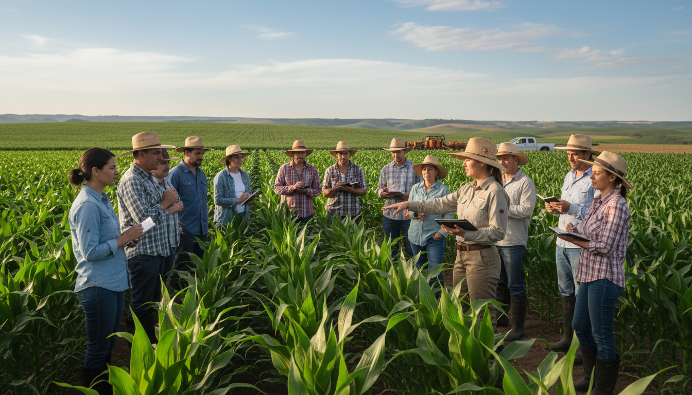

Impulsando la productividad del campo ecuatoriano con fertilizantes de alta eficiencia.
En Fermagri, nos dedicamos a transformar el campo ecuatoriano a través de la nutrición vegetal de precisión. Con años de experiencia en el mercado, ofrecemos soluciones tecnológicas que maximizan el rendimiento de los cultivos de exportación.
Nuestra misión es proporcionar insumos de alta calidad y asesoría técnica especializada para asegurar una agricultura sostenible y rentable para nuestros productores.

Acompañamiento especializado para optimizar el rendimiento de sus cultivos.
Distribución eficiente y segura para que sus insumos lleguen a tiempo al campo.